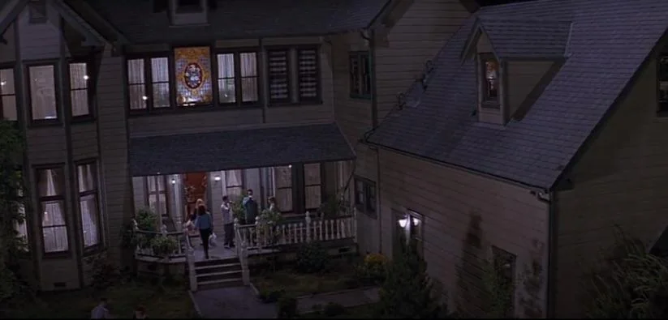
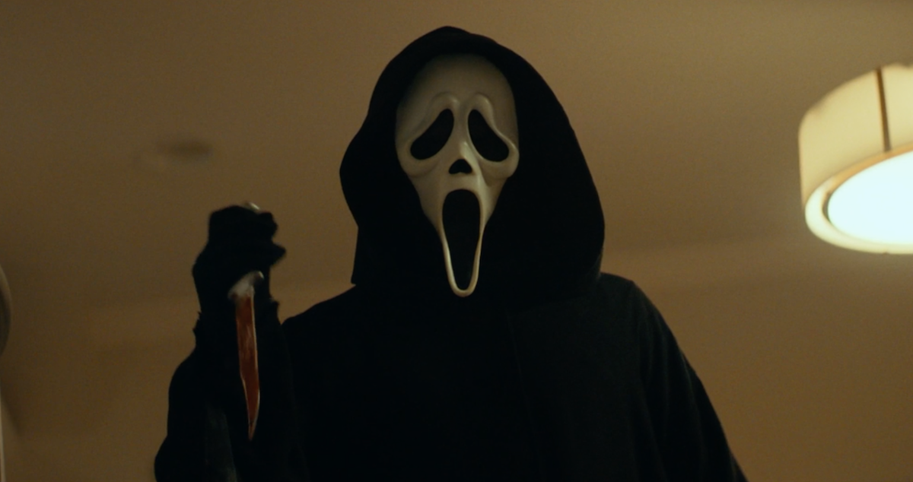
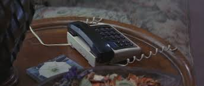
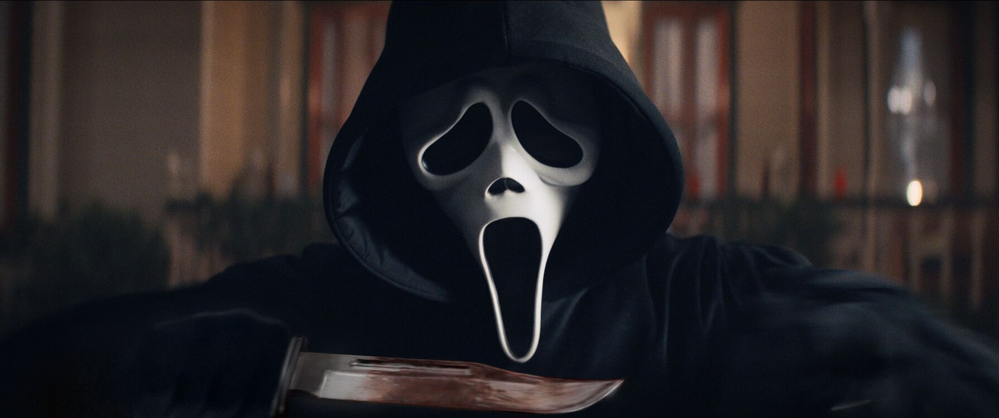

.....
Kevin Williamson(Regisseur)

Kevin Williamson (1965) is een Amerikaanse scenarioschrijver, producer en regisseur. Hij is vooral bekend als de bedenker en schrijver van de Scream-films. Hij schreef het eerste Scream-script in 1996, dat het slashergenre opnieuw populair maakte. Hij werkte ook aan I Know What You Did Last Summer, The Faculty en maakte de serie Dawson’s Creek. Voor Scream 7 keert hij terug als schrijver en regisseur, waardoor fans verwachten dat de film weer de stijl van de originele delen krijgt.
Guy Busick(Scenarist)

Guy Busick is een Amerikaanse scenarioschrijver die vaak samenwerkt met regisseurs in het horror-genre. Hij werkte mee aan films zoals Scream (2022), Ready or Not en Escape Room. Voor Scream 7 is hij betrokken als schrijver, waardoor hij bijdraagt aan het behoud van de spannende en humoristische stijl van de eerdere films.
William Sherak(Producent)

William Sherak is een Amerikaanse filmproducent en mede-oprichter van het productiebedrijf Project X Entertainment, dat verantwoordelijk is voor de recente Scream-films. Hij werkte mee aan Scream (2022) en Scream VI, en keert voor Scream 7 terug als producent. Sherak houdt toezicht op het volledige productieproces, waaronder budget, planning en creatieve richting. Dankzij zijn ervaring in het genre helpt hij de moderne stijl van de nieuwe Scream-films te behouden.
James Vanderbilt(Producent)

James Vanderbilt is een Amerikaanse scenarioschrijver en producent. Hij schreef eerder de scripts voor Scream (2022) en Scream VI en is opnieuw betrokken bij Scream 7. Vanderbilt staat bekend om zijn mix van spanning, humor en meta-elementen in zijn verhalen. Naast zijn werk als schrijver is hij ook producent van het project, waardoor hij zowel het verhaal als de vormgeving van de film beïnvloedt.
Paul Neinstein(Producent)

Paul Neinstein is een Amerikaanse producent en partner bij Project X Entertainment. Hij werkte mee aan de recente delen van de Scream-reeks. Voor Scream 7 is hij opnieuw betrokken als producent en richt hij zich vooral op de logistieke en organisatorische kant van de productie. Zijn rol zorgt ervoor dat het maakproces soepel verloopt en de film de kwaliteit behoudt die fans gewend zijn.
Neve Campbell (Sidney Prescott)

Neve Campbell is een Canadese actrice die wereldberoemd werd door haar rol als Sidney Prescott in de Scream-films. Sidney is het hoofdpersonage van de reeks: een meisje dat in de eerste film wordt aangevallen door Ghostface en later uitgroeit tot een sterke vrouw die meerdere nieuwe aanvallen overleeft. Campbell speelde Sidney in bijna alle Scream-films, behalve Scream VI. In Scream 7 keert ze terug.
CourteneyCox (Gale Weathers)

Courteney Cox is een Amerikaanse actrice die bekend is door haar rol als Gale Weathers, een ambitieuze journaliste in de Scream-films.
Isabel May

Isabel May is een Amerikaanse actrice die vooral bekend werd door haar rollen in tv-series en films voor jongere en familievriendelijk publiek. Ze speelde o.a. in Alexa & Katie en The Way Home.
Finale in Het originele huis
De finale in het originele huis in Scream (2022) is een belangrijk moment in de film. De scène speelt zich af in hetzelfde huis als in de eerste Scream uit 1996, wat het voor fans meteen herkenbaar maakt. De personages komen samen in het huis voor een feest, maar al snel slaat de sfeer om wanneer Ghostface verschijnt en mensen aanvalt. Net als vroeger verandert het huis in een plek vol spanning en gevaar. Ook bekende personages zoals Sidney, Gale en Dewey spelen hier een rol. Deze finale is speciaal omdat de film teruggaat naar het begin van de serie. Het laat zien dat het verleden blijft terugkomen en dat Ghostface, zelfs na vele jaren, nog steeds een bedreiging is.
GhostFace
Ghostface is de moordenaar uit de Scream-films en geen vaste persoon, maar een identiteit die door verschillende daders wordt gebruikt. Hij draagt een zwart gewaad met een wit schreeuwend masker en gebruikt telefoontjes om zijn slachtoffers angst aan te jagen. In tegenstelling tot veel horrorfiguren is Ghostface menselijk en kwetsbaar, wat de dreiging realistischer maakt. Achter het masker schuilt steeds iemand anders, waardoor niemand te vertrouwen is.
Het Begin
De scène start rustig: een alleen thuis zijnde tiener krijgt een vriendelijk telefoontje. Wat eerst luchtig en speels klinkt, wordt steeds dreigender wanneer de beller persoonlijke vragen stelt en laat merken dat hij haar in de gaten houdt. De spanning bouwt zich langzaam op door het contrast tussen de normale huiselijke sfeer en de toenemende dreiging. Deze openingsscène maakt meteen duidelijk dat niemand veilig is en vormt de basis voor de angst en het psychologische spel dat de rest van de film kenmerkt.
School
Op school lijkt het leven gewoon door te gaan, ondanks de eerdere moorden. Leerlingen maken grappen en voelen zich veilig in de drukte, maar de dreiging hangt constant in de lucht. De normale schoolomgeving staat in scherp contrast met het naderende gevaar, waardoor duidelijk wordt dat zelfs plekken die veilig horen te zijn dat niet meer zijn.